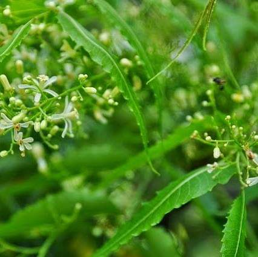

ဆေးဖက်ဝင် တမာရွက်

တမာရွက် မှာ ဆေးဖက် ဝင်အာနိသင် တွေရှိ တယ်ဆိုတာလူအများစုကသတိပြုမိကြပါတယ်။တမာရွက်တင်မက တမာခေါက်တွေကို အိန္ဒိယမှာ အလွန်ထင်ရှားတဲ့ဆေးဖက်ဝင်ပစ္စည်းအဖြစ်အသုံးပြု ခဲ့ပါတယ်။
အခုအခါ တစ်က းဆေဖက်ဝင်တမာရွက်ရဲ့အစွမ်းတွေကို သိနားလည်ပြီးအသုံးပြုနေကြပြီဖြစ်ပါတယ်။ဒါပေမဲ့ တမာရွက်ကို များများစားရင်အကြောတက်တယ်လို့ရှေးလူကြီးတွေက ဆိုကြ တာကြောင့် အသင့်အတင့်သာစားပေးသင့်ပါတယ်။
(၁) ပိုးသတ်အာနိသင်ရှိပါတယ်
တမာရွက်မှာ ဘက်တီးရီးယား၊ကပ် ပါးကောင်၊ ဖန်းဂပ်စ်မှို၊ ပရိုတိုဇွနဲ့ဗိုင်း ရပ်စ်တွေကို ဆန့်ကျင်နိုင်တဲ့ပိုးသတ်အာ နိသင်တွေ ရှိပါတယ်။ဒါကြောင့် အနာ ပေါက်နေချိန်မှာတမာရွက်ကို ပြုတ်ပြီး တို့စားတာ၊တမာရွက်ကို ကျိုပြီး ရလာ တဲ့ ရေနဲ့အနာကို ဖန်ရည်ဆေးတာတွေ
ပြုလုပ်ကြတာ ဖြစ်ပါတယ်။
(၂) ခန္ဓာကိုယ်မှာ ကပ်ငြိနေတဲ့
ပိုးမွှား တွေကို သေစေနိုင်ပါတယ်သင့်ခန္ဓာကိုယ်အရေပြား ယားယံ နေရင် တမာရွက်ပြုတ်ရည်နဲ့ ရေချိုးလိုက် ပါ။တမာရွက်ရဲ့ ဆေးဖက်ဝင်အာနိသင် ကြောင့် ခန္ဓာကိုယ်မှာ ကပ်ငြိနေတဲ့ပိုး မွှားတွေကို ကင်းစင်စေပါတယ်။
(၃) ပြတ်ရှရာနဲ့ အနာတွေကို အမြန် သက်သာစေပါတယ်
သင့်အရေပြားမှာ ပြတ်ရှရာ ဒါမှမဟုတ် အနာတွေ ဖြစ်ပေါ်နေရင် တမာ ဆီကိုလိမ်းပေးနိုင်ပါတယ်။ဒဏ်ရာနဲ့ အ နာတွေမှာကပ်ငြိနေတဲ့ ပိုးမွှားမှန်သမျှတွန်းလှန်ပေးပြီး အနာကျက်မြန်စေပါ တယ်။
(၄) အရေပြားအနာတွေအတွက်
ဆေး စွမ်းကောင်းပါနှင်းခူ၊ ဝက်ခြံ၊ အရေပြားဓာတ်မ တည့်တာ၊ အရေပြားမှာအနီကွက်ပေါ် တာ၊ အရေပြားမှာယားနာပေါက်တာ စတဲ့အရေပြားဝေဒနာအားလုံး အမြန်သက်သာစေဖို့ တမာဆီ ဒါမှမဟုတ်တမာ ရွက်နဲ့ လုပ်ထားတဲ့ပေါင်ဒါမှုန့်ကို အသုံး ပြုပေးပါ။
(၅) မီးလောင်ဒဏ်ရာကို
အမြန်သက် သာစေပါတယ်မီးလောင်တာကြောင့် ဖြစ်လာတဲ့ဒဏ်ရာတွေကို ကုသရာမှာတမာရွက် ထည့်ကျိုထားတဲ့တမာရေကို လိမ်းပေး ပါ။အရေပြားကို အနာအမြန်ကျက်စေ ပြီးပိုးမဝင်အောင်နဲ့ ဓာတ်မတည့်မှုမဖြစ်အောင် ကာကွယ်ပေးနိုင်ပါတယ်။
(၆) ဆံပင်သား ကျန်းမာစေပါတယ်
တခြားဆံပင်လိမ်းဆီအစားဆံပင် မှာတမာဆီကို လိမ်းပေးရင်ဆံပင်မဖြူ အောင် ကာကွယ်ပေးနိုင်ပြီးဗောက်ထ တာ၊ သန်းရှိတာနဲ့ ဆံပင်ကျွတ်တာတွေ ကိုသက်သာလျော့ပါးစေပါတယ်။
(၇) ကြွက်သားနဲ့ အဆစ်တွေ နာကျင်မှု
ကြွက်သားနဲ့ အဆစ်တွေ နာကျင်မှုကို သက်သာစေပါတယ်တမာဆီကို နာကျင်နေတဲ့ ကြွက် သားနဲ့ အဆစ်နေရာတွေမှာ လိမ်းပြီးနှိပ် ပေးရင် ရိုးဆစ်ရောင်ရမ်းနာ၊ဂေါက်အ ဆစ်ရောင်နာ၊ ခါးနာတာစတဲ့ နာကျင်မှု ဝေဒနာတွေကိုသက်သာစေနိုင်ပါတယ်။
(၈) အစာခြေစနစ်ကို ကောင်းမွန်စေ ပါတယ်
တမာရွက်ကို ပြုတ်ပြီး စားပေးရင် အရသာခံအာရုံ မကောင်းတာကို သက် သာစေပြီးဝမ်းချုပ်တာနဲ့ အစာမကြေ တာကို သက်သာစေပါတယ်။ရင်ပူမှုမ ဖြစ်အောင်လည်းကာကွယ်ပေးနိုင်ပါ တယ်။
(၉) သန်ကောင်တွေကို ကင်းစင်စေပါတယ်
တမာရွက်ကို ပြုတ်ပြီး စားတာကသန်ကောင်တွေကို ကင်းစင်စေပါတယ်။ အကြောင်းကတော့ တမာရွက်မှာသန် ကောင်တွေကို တွန်းလှန်ပေးနိုင်တဲ့အ စွမ်းရှိပြီး အူလမ်းကြောင်းရဲ့ လုပ်ငန်း ဆောင်တာတွေကို ကျန်းမာစေလို့ပါ။
(၁၀) သွေးသန့်စင်စေပါတယ်
တမာရွက်ကို ပုံမှန်စားပေးရင်သွေး သန့်စင်စေပါတယ်။ တမာရွက်ဟာ သွေး ထဲက အညစ်အကြေးတွေကိုဖယ်ရှား ပေးတာကြောင့် ခန္ဓာကိုယ်မှာရောဂါ ကင်းစေပါတယ်။
(၁၁) သွေးတွင်း သကြားဓာတ်
သွေးတွင်း သကြားဓာတ်ကိုထိန်း ပေးနိုင်ပါတယ်တမာရွက်ကို ဆီးချိုသွေးချိုရောဂါရှိသူတွေအတွက် ထိရောက်တဲ့ဆေးတစ် လက်လို့ ဆိုကြပါတယ်။အကြောင်းက တော့ တမာရွက်ဟာသွေးတွင်းသကြား ဓာတ်ကိုပုံမှန်ဖြစ်အောင် ထိန်းပေးနိုင်လို့ပါ .
(၁၂) ခုခံစွမ်းအားစနစ်
ခုခံစွမ်းအားစနစ်ကိုကောင်းမွန်စေပါတယ်တမာရွက်ကို စားပေးရင် ခန္ဓာကိုယ် ရဲ့ကိုယ်ခံစွမ်းအားစနစ်ကို သန်စွမ်းကောင်းမွန်စေပြီး ခန္ဓာကိုယ်ကိုအားနည်း စေတဲ့ ပြင်ပရောဂါတွေကိုလည်း အတိုင်း အတာတစ်ခုအထိတွန်းလှန်ပေးနိုင်စွမ်း ရှိပါတယ်။